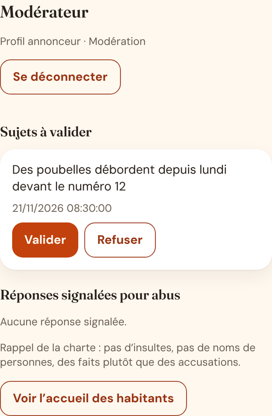

Équipe du site : valider, modérer, retirer. Chaque case se lit dans l’ordre, de gauche à droite.
Le rôle de modérateur est attribué par un administrateur.
Deux listes dans votre espace.

Le bouton « Retirer (équipe) ».
Il reste dans Sujets à valider tant que personne ne l’a validé ou refusé.
Elle ne peut pas être récupérée. Demandez à l’auteur de la republier.
Rechargez la page et vérifiez que vous êtes connecté avec votre compte de modérateur.